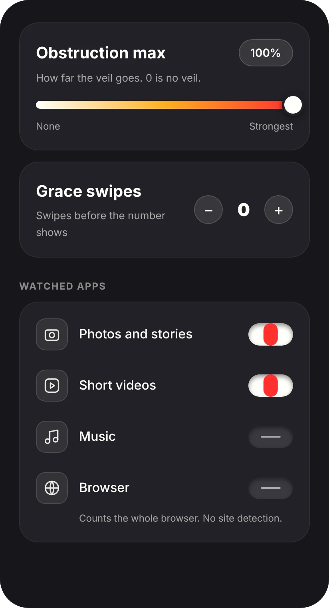

Yours to set up.
Choose the apps, the style, the pace and the hours. Tally does nothing to the apps it watches.
Pick your apps.
Tally finds common social apps and turns them on for you. You can turn on any other installed app, and turn off any you do not want counted.
Browsers are off by default. If you turn one on, the whole browser counts, because Tally does not look at which site you are on.

Choose your hours.
Show the number all day, or only inside a window you set, such as 21:00 to 06:00. The window can cross midnight and uses your phone's clock.
Outside the window the number is hidden, but counting keeps running, so the totals stay right when it opens.
What Tally needs from Android.
To count swipes in other apps, Tally uses Android's accessibility service, and it draws the number over them. Android asks you to turn this on yourself.
Tally reads no text, messages or posts. It counts scroll events and the time an app is in front. The counts stay on your phone.
Tally is for Android only, for now.
Hear when Tally is ready.
One email when it is available. Nothing else.
Your address goes into a Google Sheet kept by Jergusino and is used only to tell you when Tally is ready. More on your email.